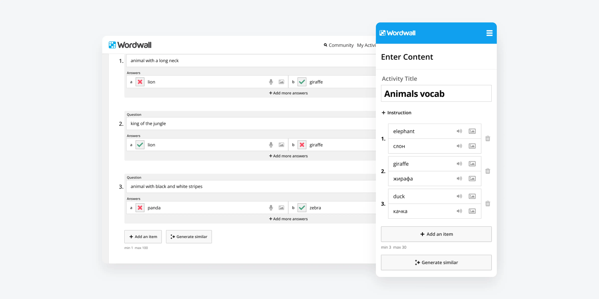
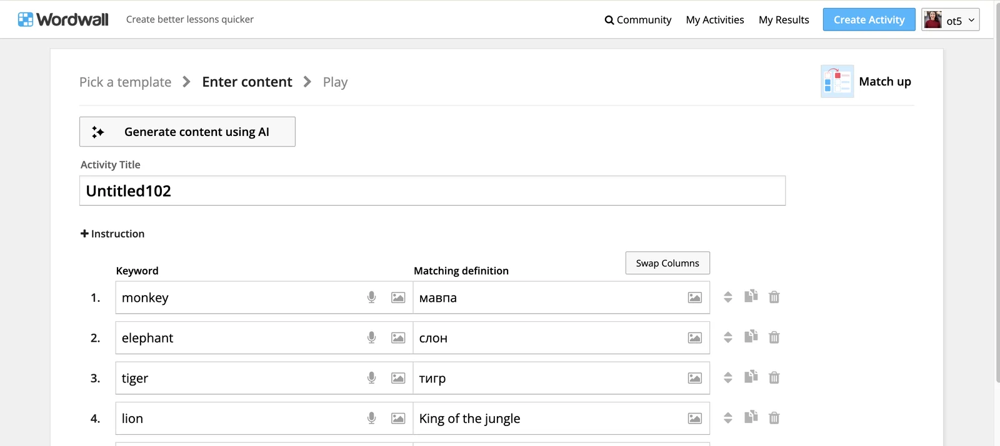
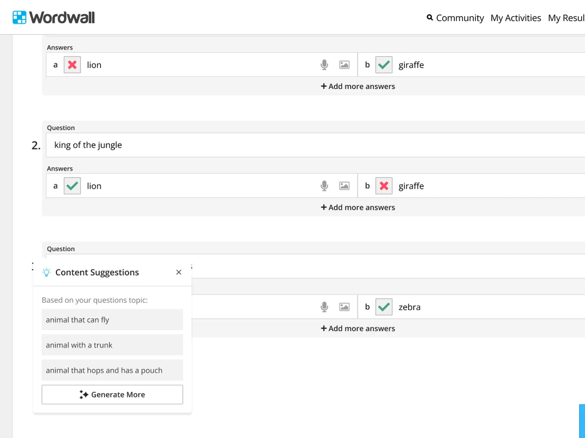
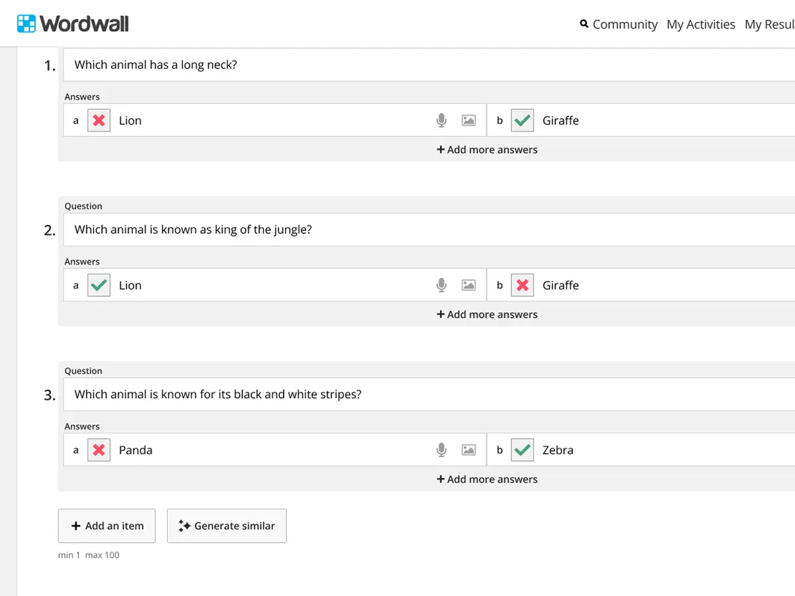
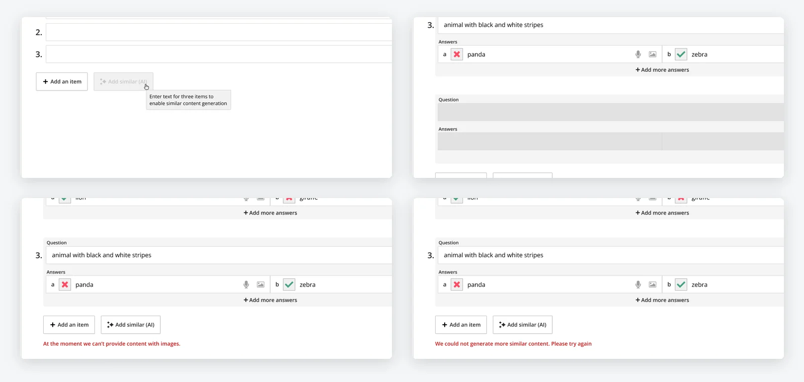
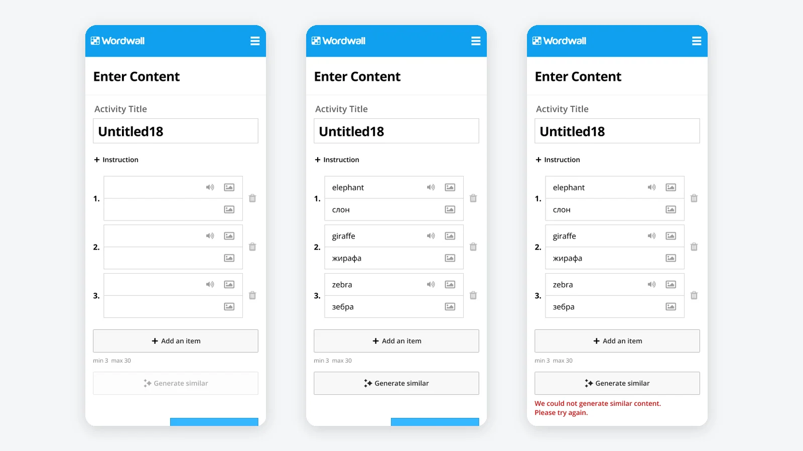

AI that helps while you type
Moving AI from a separate “generate an activity” modal into the editor itself, where teachers run out of ideas halfway through a quiz.

AI was already in the product, just not where the work happened
There was already a first-generation AI feature: a “Generate content using AI” button that opens a modal, takes a prompt and drafts a whole activity. It works for teachers who start from a blank page.
Most teachers don't, though. They arrive with a topic and a few questions they want to ask their class. Quiz was the most-created template in both 2023 and 2024, but it had the third-lowest editor completion rate (52.61% against 60.88% on average). The effort sits in the middle of an activity, not at the start.

Find out where AI should help next, and ship the first version
The company goal for the quarter was easier creation. My job was to work out which kind of in-editor AI help would move it, get the team to agree on a direction, and take that direction from research to an A/B test.
Larger activities are effortful. Quiz is our most-created template, yet only about half of the people who open its editor finish an activity. Teachers start with a few questions in mind and stall when they need ten.
If AI offers more content in the same format as what the teacher has already typed, right where they are working, more teachers will finish large activities, and finishing more activities leads to more subscriptions.
Five steps from research to release
- 1. Research: watching teachers create, on our prototypes and on other tools
- 2. Options: four directions, and why we picked one
- 3. Shaping: the smaller trade-offs that made it work
- 4. Measurement: designing how we'd know
- 5. Testing in other languages: what broke outside English
Watching teachers create, on our prototypes and on other tools
I built clickable, coded prototypes of an in-editor “generate more” for Match up and Quiz in v0, so participants could actually type their own content instead of clicking through static frames. I tested them on Userbrain, then ran three more studies watching teachers build a 10-question activity in four other popular creation tools, each with its own take on AI help. The point wasn't to judge those products. It was to see which patterns teachers actually used when no one was explaining them.
What changed our thinking:
- Help shown in context gets used. When a tool offered images right next to the question being typed, participants noticed them and picked one.
- A big AI modal pulls people out of their own work. Once participants entered a full-screen AI flow, they stopped creating manually altogether.
- Hidden options stay hidden. Nobody used an “add similar questions” option that sat inside a menu, and only 1 of 3 people found a question-count setting in another AI flow.
- Always-on suggestions add noise. Autocomplete that didn't take into account what people had already typed was mostly ignored, and only 2 of 6 participants produced good content with it.
- Correct answers are forgotten unless the system insists. 3 of 6 people in our prototype never changed correct/incorrect status, and in another tool everyone who created manually hit an error on save.
- When ideas run out, people leave. Several participants opened Google mid-task to find more items, then typed them in by hand.
Four directions, and why we picked one
I wrote these up as separate solution cards so the team could argue about them on their merits. Engineers, the head of design and the co-founder all pushed back in the threads, and the decision came out of that discussion.
Not pursuedA · A suggestions pop-up
After a few items, a lightbulb appears. It opens a panel of suggested questions “based on your topic”, which the teacher can add or regenerate.

ShippedB · An inline “Generate similar” button
A button sits next to “Add an item”. One click adds a complete new item (question, answers and correct flags) in the same format and on the same topic as the items already there.

On holdC · “Fix my answers” for Quiz
This direction came out of the correct-answer findings. I proposed three versions: a nudge to mark answers, a button to generate or fix them, and AI setting correct answers automatically when the teacher clicks Done.
LaterD · A chat assistant in the editor
This was a broader “editor genie” you could ask to generate more, fix typos, change difficulty or add audio to every item.
The smaller trade-offs that made it work
Once we'd picked a direction, most of the design work was in the details, each of them a small decision with a cost:


Designing how we'd know
I wanted the A/B test to tell us more than “people clicked it”. Together with product analyst, I specified the events and goals in a developer brief:
- How much AI went into an activity: a count of assists saved with every created activity.
- Whether assisted teachers finish: editor completion and creations, measured separately for sessions where the assist was used.
- Whether it works reliably: server-side success and failure events, with generation time recorded.
- A clear definition of “used”: an assist only counts once an item has actually been added, not on the click.
What broke outside English, and how we chose a fix
Before release I tested the build the way our non-English users create: Ukrainian quizzes, and Polish–English and Spanish–English vocabulary sets. When the activity kept its default “Untitled” name, output drifted. The UX researcher's usability sessions showed most testers never named their activity.
To decide whether the problem was big enough to block release, I checked real data rather than the test sessions. In September only 2.3–3.1% of new activities in the UK, US, Ukraine and Poland were left untitled. Real teachers name their activities, even though testers didn't, so we went ahead.
Outcome & takeaways
What shipped
- “Generate similar” on desktop and mobile, across the templates supported by the existing AI.
- Released behind a feature switch as an A/B test, which showed +2.5% creations among paid users.
- Analytics events and goals we could reuse for later AI features.
- Follow-up cards for auto-titles and fixing Quiz answers.
What I'd carry forward
- Put AI where the user’s next action already is, and never let it change content silently.
- Weigh overlapping AI ideas side by side, not one card at a time. Choosing what to build first mattered as much as how to design it.
- Test in your users’ languages, and check real usage data before adding UI to fix an edge case. Here it showed a warning wasn’t needed.
The throughline
AI features are easy to add and easy to ignore. What made this one useful wasn’t the model. It was where it lived: next to the button teachers were already about to press, producing content they could see and edit.